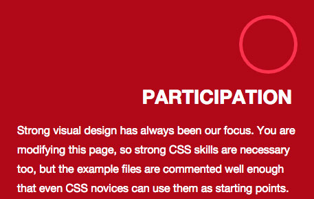
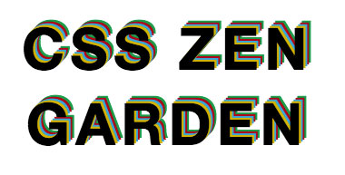

View the project live or view the code on Github.
About
This project is based on CSS Zen Garden, an exercise in the power of CSS. For this project, I was only allowed to edit the CSS file. I used ::before and ::after to create my layout. One requirement that we had in class that is different from the CSS Zen Garden requirements is that we had to use CSS animations.
Process & Technology Used
HTML, CSS, RWD.
Challenges Faced & Problems Solved
The biggest challenge with this project was not being able to edit the HTML file. However, this ended up being a limitation that helped me grow. By having that limitation, I was forced to learn more about CSS and learn how to work with ::before and ::after.


